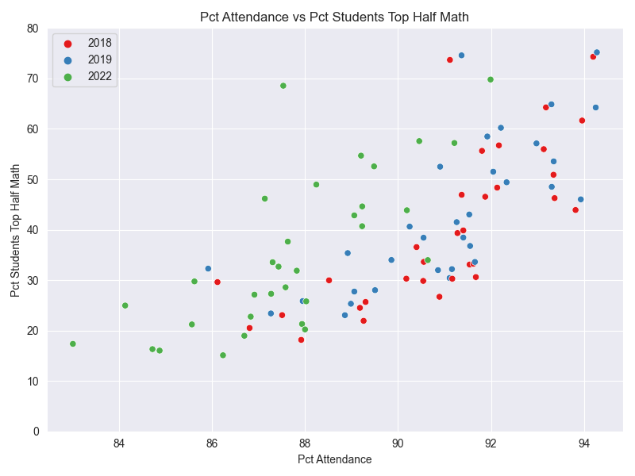
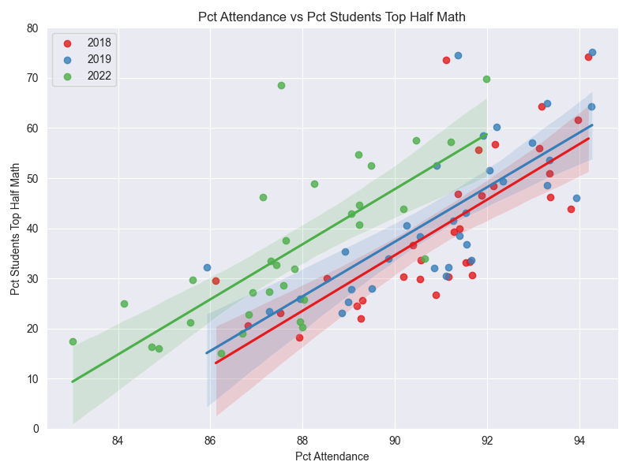

It is important to examine student attendance rate due to its correlation with student academic performance.
To obtain a comprehensive understanding, it is also important to consider potential confounding variables, such as time period and demographics.
In this page, we present the same scatterplot from a variety of perspectives to explore the relationship between attendance rate and test scores.
Each point on the scatterplot represents one district in a given year (2018, 2019, or 2022). The y-axis represents student performance, or more specifically the percentage of students in
a district who scored a 3 or 4 (out of 4) on the math state assessment. The x-axis represents a district's attendance rate for that year.
While regression analysis is insufficient to determine the causal relationship between attendance rate and student performance, we will use it as a tool
for understanding correlations between our variables of interest.
Attendance Rate and Test Scores are Significantly Related
Without considering moderating variables, regression analysis indicates that there is a significant positive relationship between attendance rate and test scores.
This highlights the importance of examining attendance rate in NYC public schools and is the main motivation for this project.
Assuming the model \(\widehat{score} = \beta_0 + \beta_1 * attendance\),
the estimated regression is \(\widehat{score} = -335 + 4.2 * attendance\).
The slope coefficient (4.2) is statistically significant at strict levels of confidence,
indicating that there is a significant positive correlation between attendance rate and test scores.
The slope coefficent tells us that on average,
a one percent increase in attendance corresponds to more than a four percent increase in the proportion of
students scoring a 3 or 4 on the math state assessment.
This Relationship Between Attendance Rate and Test Scores Persists Over Time
Since we are looking at several years of data on the same scatterplot, we must also examine whether the same relationship
holds across time.
The math state assessment was redesigned in 2018 and due to the pandemic, it was not administered in 2020 and 2021.
Therefore, the dataset of test scores only includes data from the years 2018, 2019, and 2022.
To see if the relationship between test scores and attendance rate differ from year to year, we can group the points in the scatterplot
by year.
Regression analysis for each year indicates that this relationship remained consistent over the years, despite
the fact that attendance rate decreased during the pandemic.


Regression analysis for each year of data yields similar slope coefficients. This
suggests that the relationship between attendance rate and test scores for a district remained relatively consistent
over the years. However, the y-intercept also increased from 2018 to 2022, indicating that attendance
rate decreased from 2018 to 2022. Taken together, the results suggest that the relationship between attendance rate
and test scores remained consistent over the years despite attendance rate decreasing.
For 2018, the regression is:
\[\widehat{score} = -465 + 5.55 * attendance \]
For 2019, the regression is:
\[\widehat{score} = -453 + 5.45 * attendance \]
For 2022, the regression is:
\[\widehat{score} = -447 + 5.50 * attendance \]
The Relationship Between Attendance Rate and Test Scores Persists Across Different Demographics
While there is a significant relationship between attendance rate and test scores, both variables are also
correlated with demographic variables, such as membership in certain minority groups and lower income households.
Chronic absenteeism, which is defined as students who miss more than 10% of school days, is also (unsurprisingly) linked to attendance rate and test scores.
In this section, we group the data points by the following variables: Black/Hispanic, poverty, and chronically absent.
The variables are binary and represent whether a district in a given year consists of greater than the median percentage of that demographic.
The role of these three variables on attendance rate and test scores is apparent in the distribution of the points on the lower end of both axes,
which suggests that being in these demographic groups is correlated with lower test scores and lower attendance rate.
Note: The cutoffs for each demographic variable were chosen as the median value for the variable across all
districts and years.
In our regression analysis, we control for the demographic variables to see if the relationship between
attendance rate and test scores still holds.
To do so, we can retain the same linear model as before and add a third term to account for the demographic variable.
We estimate the following model for each group:
\[score = \beta_0 + \beta_1 * attendance + \beta_2 * demographic\_variable \]
The estimated regressions are:
\[\widehat{score} = -156 + 2.3 * attendance - 17.8 * black\_hispanic \]
\[\widehat{score} = -219 + 3.0 * attendance - 14.8 * poverty \]
\[\widehat{score} = -318 + 4.0 * attendance - 1.1 * chronic\_absenteeism \]
The blue lines in the plot represents the regression of the group of students that don't fall within the specific demographic,
and the orange lines in the plot represent the group of students that fall within the demographic.
From these regressions, we can see that districts with a higher percentage of Black and Hispanic students and
students in poverty tended to have a smaller percentage of students scoring a 3 or 4 on
the exam.
In addition, districts with a higher percentage of chronically absent students tended score consistently with the predicted
score from attendance rate.
The Relationship Between Attendance Rate and Test Scores is Moderated by Demographic Variabless
While the relationship betwen attendance rate and test scores persists across different demographic groups,
the demographic variables seem to play a moderating role.
In these regressions, we look at the relationship between attendance rate and test scores while taking
the demographic variable into consideration. To do so, we add a third term that accounts for the combined effect of attendance rate
and the demographic variable.
In short, we estimate the following model for each group:
\[score = \beta_0 + \beta_1 * attendance + \beta_2 * demographic\_variable + \beta_3 * attendance *
demographic\_variable \]
The estimated regressions are:
\[\widehat{score} = -190 + 2.64 * attendance + 44.4 * black\_hispanic - 0.69 * attendance * black\_hispanic \]
\[\widehat{score} = -214 + 2.90 * attendance - 24.3 * poverty + .11 * attendance * poverty \]
\[\widehat{score} = -547 + 6.47 * attendance + 327 * chronic\_absenteeism - 3.6 * attendance *
chronic\_absenteeism \]
In these regressions, we can see that there is a difference in strength of relationship by adding an interaction term between attendance and
the demographic variable.
In particular, by looking at the terms associated with chronic absenteeism, we can see that for
districts with a higher percent of chronically absent students, the effect of increased attendance is less pronounced.
This means that other factors may be affecting the poor test scores. This is most clearly seen by the difference
in slopes in the right-most figure. The steeper slope among districts with a low % of chronically absent students
suggests that the relationship between attendance rate and test scores is stronger among districts without chronic absenteeism.